This website helps you identify potential types of color blindness through a set of Ishihara plates — a widely used method to test color vision. Simply look at each image and type the number you see. At the end, click "Check Result" to know more about your color vision.
🔴 Protanopia: A red-green color vision deficiency caused by missing or non-functional red cones. Red colors may appear dark or even black.
🟢 Deuteranopia: Another red-green deficiency caused by missing green cones. Green colors may be confused with red or yellow.
🔵 Tritanopia: A blue-yellow color deficiency caused by missing blue cones. Individuals often struggle to differentiate between blue and green or yellow and pink.
🌀 Hybrid Color Blindness: This refers to symptoms involving more than one type of color blindness, which may lead to broader difficulties distinguishing colors.
1. What number do you see?
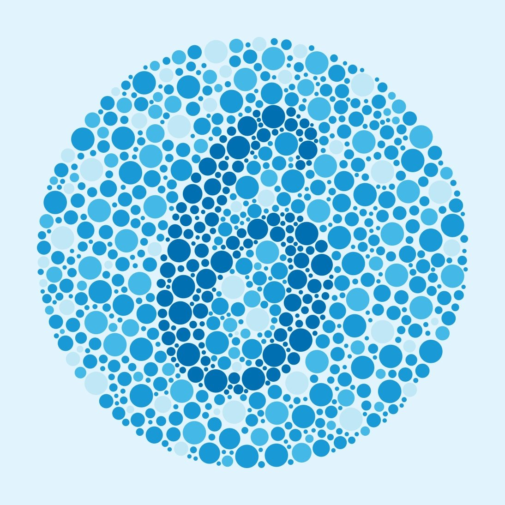2. What number do you see?
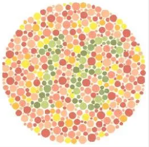3. What number do you see?
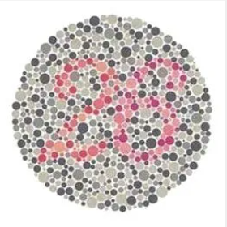4. What number do you see?
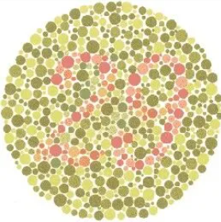5. What number do you see?
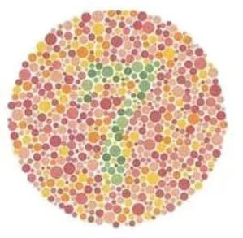6. What number do you see?
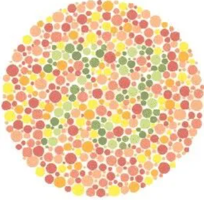7. What number do you see?
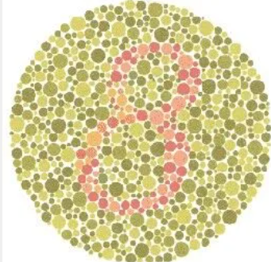8. What number do you see?
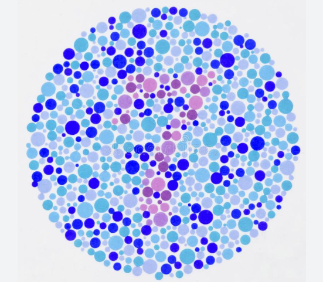9. What number do you see?
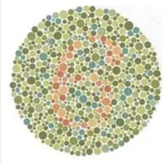10. What number do you see?
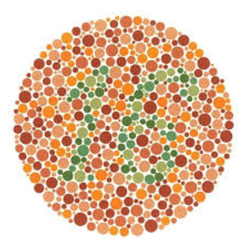11. What number do you see?
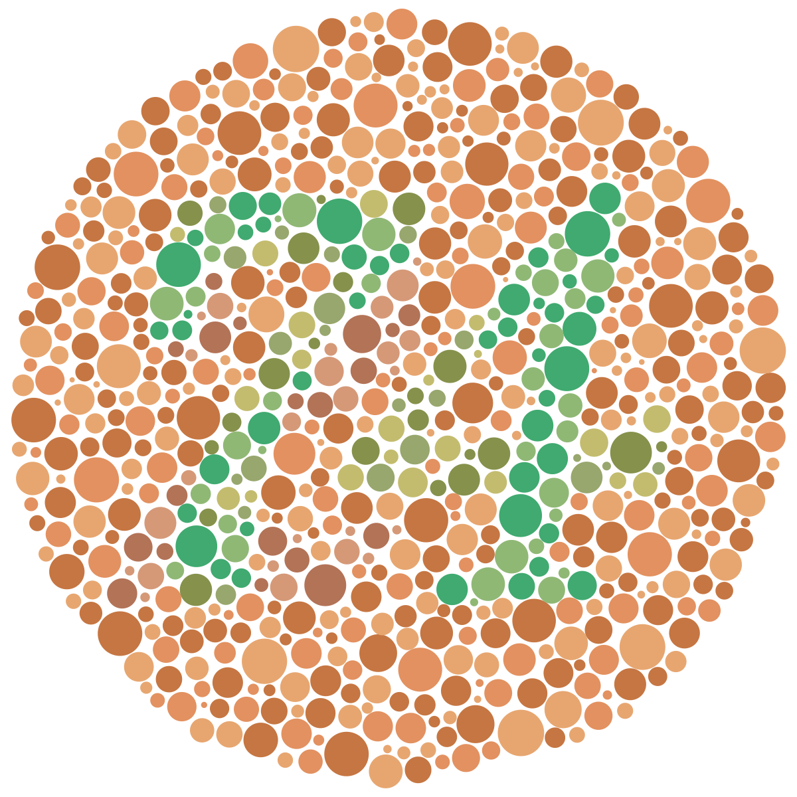12. What number do you see?
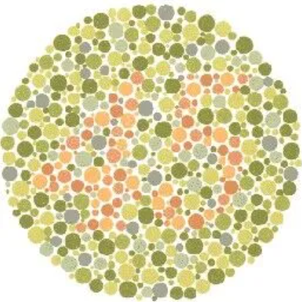